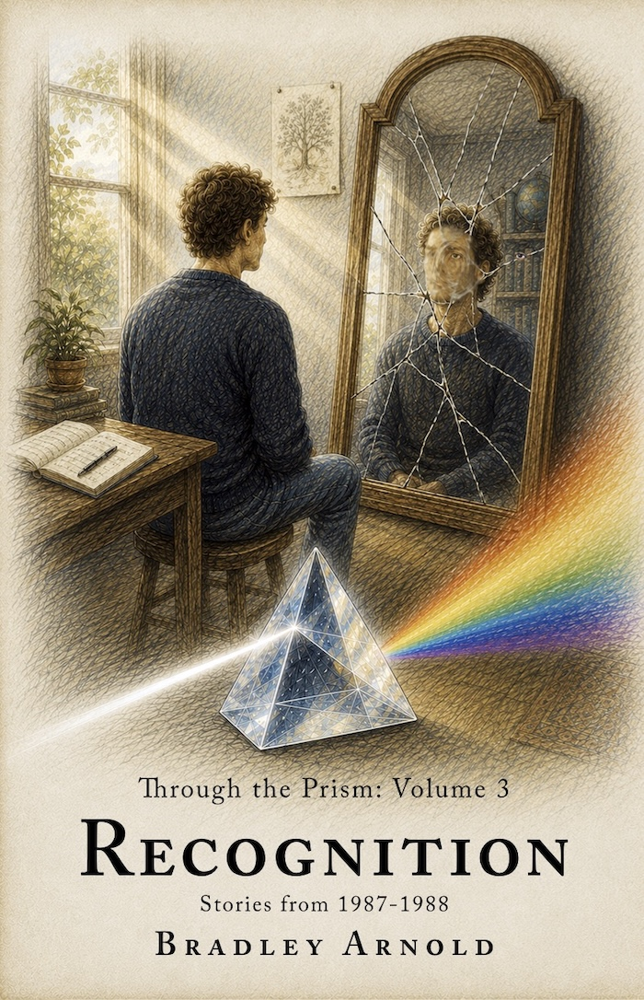

Through the Prism — Volume III
Recognition
Perception, identity, and the experience of seeing differently.
Sometimes discovery is not about finding something new, but recognizing something that has been there all along.
Recognition explores the ways in which we perceive ourselves, other people, and the world around us. Its stories and essays examine assumptions, identity, language, freedom, and understanding.
The final volume continues the conversation begun in Wonder and Encounter, inviting readers to reconsider not only what they see, but how they have learned to see it.
About Recognition
Recognition is not necessarily the arrival at an answer. Sometimes it is the realization that we have been asking the wrong question.
Through fiction, philosophical essays, and reflections, this volume explores the relationship between perception and reality, between language and meaning, and between self-understanding and personal freedom.
Ideas and Themes
- Perception and reality
- Identity and self-understanding
- Language and meaning
- Freedom and responsibility
- Recognition and transformation
A Note from the Author
Looking back at writings from different periods of my life, I sometimes recognize questions that I did not fully understand when I first began asking them. The conversation between those earlier writings and my present understanding continues.
Inside the Volume
The complete table of contents will be added here.
Selected Readings
Selected stories, essays, poems, and reflections from this volume will be available here.
Publication Information
Publication details, available editions, downloads, and purchasing links will be added here.
Continue the Conversation
Explore the other volumes in the Through the Prism collection.